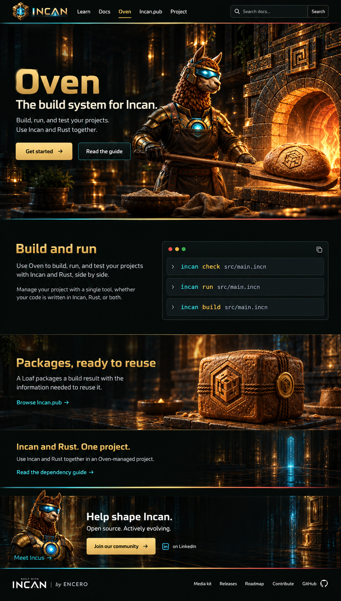
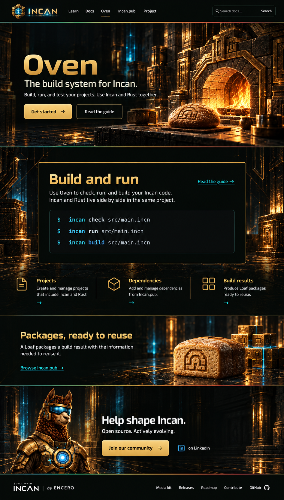
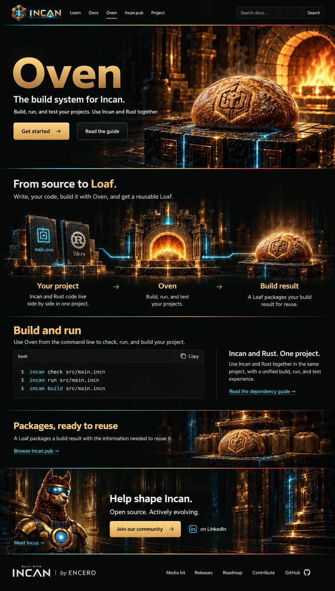

1 · Workshop
Incus at the oven, with a warm, cinematic opening.
Open option 1 full size ↗
2 · Workbench
A furnace-led opening, with the build workflow at the centre.
Open option 2 full size ↗
3 · Source to Loaf
A prominent Loaf and an illustrated journey from source to package.
Open option 3 full size ↗